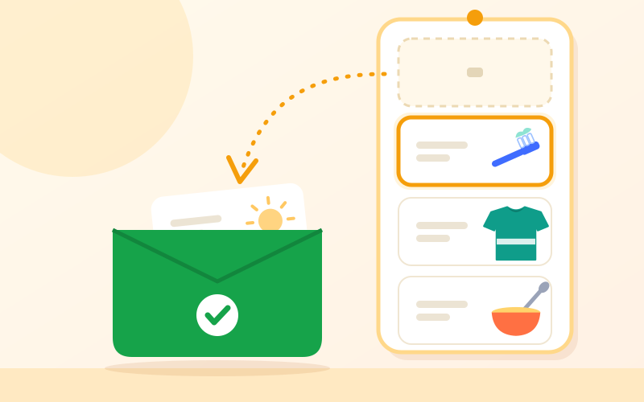
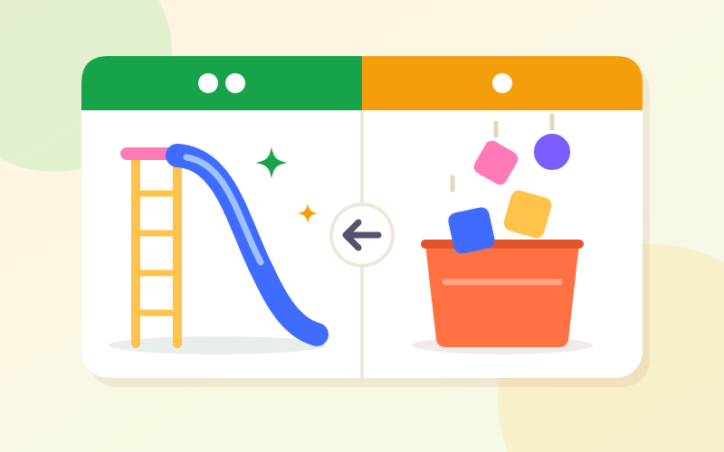
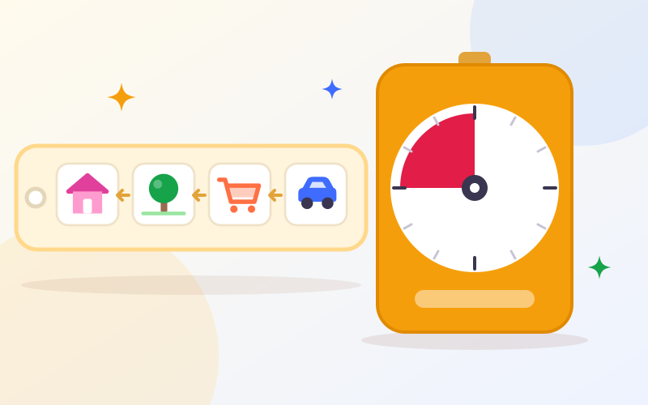

برنامهی تصویری برای کودکان: چطور کارهای روزانه را آسانتر کنیم؟
«بعدش چی؟» شاید پرتکرارترین پرسش یک کودک باشد. برنامهی تصویری، تختهی «اولـبعد» و روالهای
قابلپیشبینی به کودک نشان میدهند روزش چطور پیش میرود؛ و همین، همکاری را بیشتر و جابهجایی میان
کارها را آرامتر میکند.
زمان مطالعه: ۷ دقیقه
برنامهی تصویری چیست؟
برنامهی تصویری (Visual Schedule) چند تصویر پشت سر هم است که نشان میدهد چه کارهایی و به چه
ترتیبی انجام میشوند. تصویرها میتوانند عکس واقعی، نقاشی ساده، نماد یا برای کودکان کوچکتر خودِ
شیء باشند؛ مثلاً یک مسواک واقعی بهجای عکس مسواک.
برنامه میتواند کل روز را نشان دهد، فقط یک بخش از روز را (مثل روال صبح یا روال خواب) یا حتی
مراحل یک کار کوچک را، مثل شستن دست. ایدهی اصلی در همه یکی است: کودک بهجای اینکه منتظر
بماند کسی بگوید بعد چه کار کند، خودش نگاه میکند و میفهمد.
چرا برنامهی تصویری به کودک کمک میکند؟
حرفها گفته میشوند و از بین میروند؛ تصویر میماند. کودکی که هنوز دستورهای چندمرحلهای را
بهخاطر نمیسپارد، یا وسط بازی اصلاً صدای ما را نمیشنود، با یک نگاه به تصویر دوباره سر نخ را
پیدا میکند. برای بسیاری از کودکان، برنامهی تصویری میتواند:
پیشبینیپذیری بدهد: وقتی کودک میداند بعد از حمام نوبت قصه است، نگرانیاش از «ناشناخته» کمتر میشود.
تکرار دستورها را کم کند: بهجای «چند بار گفتم مسواک!»، کافی است بپرسید «ببینیم برنامه چی میگه؟».
استقلال را بیشتر کند: کودک کمکم بدون یادآوری بزرگترها، کار بعدی را خودش شروع میکند.
جابهجاییها را آسانتر کند: تمام کردن یک کار و رفتن سراغ کار بعد وقتی قابل دیدن است، کمتر غافلگیرکننده است.
درک زمان را تمرین دهد: مفهوم «اول»، «بعد» و «آخر» برای کودک خردسال انتزاعی است؛ تصویر آن را ملموس میکند.
پشتیبانهای دیداری از روشهای رایج در کار با کودکان اوتیسم، ADHD و تأخیر زبانیاند، اما فقط مخصوص
آنها نیستند. بسیاری از کودکان پیشدبستانی، کودکانی که مضطرباند یا تازه وارد مهدکودک و مدرسه
شدهاند هم از آن سود میبرند. با این حال هر کودک متفاوت است و برنامه باید با نیاز و سطح خودِ او
تنظیم شود.
انواع برنامهی تصویری
برنامهی روز: چند تصویر بزرگ برای بخشهای اصلی روز؛ صبحانه، مهد، ناهار، پارک، شام، خواب.
برنامهی یک روال: مراحل یک بخش پرتکرار و معمولاً پرتنش؛ مثل آماده شدن صبح یا روال پیش از خواب.
برنامهی مراحل یک کار: کار کوچک به چند قدم شکسته میشود؛ مثلاً شستن دست: آب، صابون، مالیدن، آب کشیدن، خشک کردن.
تختهی اولـبعد: فقط دو تصویر؛ کاری که الان باید انجام شود و کاری که بعدش میآید. سادهترین شروع برای کودکان کوچک.
برنامهی همراه: چند کارت کوچک روی حلقهی کلید یا یک نوار تاشو برای بیرون از خانه؛ مطب، خرید یا مهمانی.
چطور یک برنامهی تصویری بسازیم؟
لازم نیست از اول برای کل روز برنامه بسازید. با یک روال شروع کنید؛ معمولاً همان روالی که
هر روز بیشترین کشمکش را دارد.
روال را انتخاب کنید و قدمهایش را همانطور که واقعاً در خانهی شما انجام میشود بنویسید.
کوتاهش کنید. برای کودکان کوچکتر سه تا پنج قدم کافی است؛ کار بزرگ را میشود بعداً به برنامهی جداگانهی خودش شکست.
نوع تصویر را با سطح کودک هماهنگ کنید: شیء واقعی، بعد عکس واقعی (مثلاً عکس مسواک خودِ کودک)، بعد نقاشی یا نماد، و در نهایت کلمه.
جهت را ثابت نگه دارید: از بالا به پایین یا از راست به چپ، همجهت با خواندن فارسی.
جای ثابت در ارتفاع چشم کودک انتخاب کنید و کارتها را با چسب پارچهای (ولکرو) بچسبانید تا برداشتنی باشند.
یک جیب یا پاکت «تمام شد» کنار برنامه بگذارید.
کارتها را محکم کنید: با طلق یا چسب پهن روکش کنید تا چند هفته دوام بیاورند.

هر کار که تمام شد، کارتش به پاکت «تمام شد» میرود. کودک میبیند چه چیزی پشت سر گذاشته
و چه چیزی مانده است؛ کار فعلی همیشه اولین کارت نوار است.
استفادهی روزانه: برنامه را زنده نگه دارید
برنامهای که فقط روی دیوار است، کاری نمیکند. چیزی که فرق ایجاد میکند، استفادهی هر روزه و
یکسان از آن است:
در وقت آرام معرفی کنید: اولین بار وقتی کودک خسته یا ناراحت نیست، کارتها را با هم نگاه کنید و با جملههای کوتاه نام ببرید.
سر هر جابهجایی به برنامه برگردید: «بیا ببینیم بعدش چیه» را جایگزین دستور مستقیم کنید و بگذارید کودک خودش کارت بعدی را پیدا کند.
تمام شدن را نشان دهید: کودک خودش کارت کار تمامشده را بردارد و در پاکت بگذارد؛ این لحظه کوچک اما پرانگیزه است.
با یک کار دلخواه تمام کنید: وقتی آخرین کارت برنامه چیزی خوشایند است — قصه، بازی، پارک — دنبال کردن کل برنامه معنا پیدا میکند.
همه یکسان استفاده کنند: پدر، مادر، پدربزرگ و مادربزرگ و مربی؛ برنامهای که فقط یک نفر به آن پایبند است، اعتبارش را از دست میدهد.
کمک را کمکم کم کنید: اول با اشاره و گفتن، بعد فقط با اشاره، و بعد فقط با نگاهی به برنامه.
تختهی «اولـبعد»: سادهترین شروع
تختهی اولـبعد فقط دو خانه دارد. در خانهی «اول» کاری میآید که الان باید انجام شود و معمولاً
برای کودک جذابتر نیست، و در خانهی «بعد» کاری که پس از آن میآید و کودک دوستش دارد. در
فارسی «اول» سمت راست است: «اول مسواک، بعد قصه.»

اول جمع کردن اسباببازی، بعد سرسره. خانهی «اول» کوتاه و شدنی است و خانهی «بعد» همیشه
واقعاً اتفاق میافتد.
«اول» را کوتاه نگه دارید: «اول جمع کردن سه ماشین» بهتر از «اول مرتب کردن کل اتاق» است؛ هدف تجربهی موفقیت است.
به قولتان عمل کنید: اگر «بعد» اتفاق نیفتد، تخته اعتبارش را از دست میدهد.
ابزار تهدید نیست: تخته را با لحن آرام و پیش از شروع کار نشان دهید، نه وسط دعوا بهعنوان «اگر نکنی، نمیشه».
«بعد» لازم نیست جایزه باشد: گاهی فقط کار طبیعی بعدی روز است؛ مثلاً «اول کفش، بعد ماشین».
جابهجاییهای آرامتر میان کارها
بسیاری از گریهها و مقاومتهای روزانه دقیقاً در لحظهی جابهجایی اتفاق میافتند: وقتی کودک
باید بازی دوستداشتنیاش را رها کند، یا نمیداند کار بعدی چیست. این ابزارها کمک میکنند پایان یک
کار از قبل دیده شود:

بخش رنگی زمانسنج همان زمانی است که مانده و کمکم کوچک میشود؛ کودک بدون دانستن ساعت، تمام
شدن را میبیند. کنارش، برنامهی کوچک یک بیرون رفتن: ماشین، خرید، پارک و خانه.
هشدار پیش از پایان: «پنج دقیقهی دیگر بازی تمام میشود» همراه با زمانسنج دیداری یا ساعت شنی، و یک یادآوری دوباره در دقیقهی آخر.
کارت بعدی را دست کودک بدهید: کودک کارت حمام را با خودش تا حمام میبرد؛ یا یک شیء رابط، مثل حوله.
جمله یا آهنگ ثابت: یک آهنگ کوتاه برای جمع کردن اسباببازی، هر روز همان، نشانهی شنیداری پایان بازی میشود.
کارت «تغییر»: یک کارت با علامت ستاره برای وقتی برنامه عوض میشود. اول آن را برای تغییرهای خوشایند تمرین کنید تا کودک با خودِ تغییر آشنا شود، بعد برای تغییرهای سختتر.
برنامهی همراه برای بیرون: پیش از رفتن به مطب یا خرید، کارتها را با هم مرور کنید و در مسیر یکییکی کنار بگذارید.
اگر تمام کردن کارهای دلخواه برای کودک بسیار سخت است، صفحهی رفتاردرمانی
دربارهی پیدا کردن پیام پشت رفتار و آموزش رفتار جایگزین بیشتر توضیح میدهد.
اشتباههای رایج
برنامهی خیلی بلند: ده کارت پشت سر هم برای کودک سهساله زیاد است؛ با چند قدم شروع کنید.
استفاده فقط در بحران: برنامهای که فقط وقت گریه بیرون میآید، به نشانهی دعوا تبدیل میشود، نه راهنما.
تغییر بیخبر: اگر روال عوض شده، کارتها را هم با کودک عوض کنید، نه پشت سرش.
ابزار تنبیه: برداشتن کارت کار دلخواه بهعنوان تنبیه، اعتماد کودک به برنامه را از بین میبرد.
بهروز نکردن: کودک رشد میکند؛ وقتی روالی را مستقل انجام میدهد، کارتهایش را کم کنید یا به کلمه ببرید.
چه وقت کمک بگیریم؟
برنامهی تصویری ابزار سادهای است و معمولاً چند هفته استفادهی پیوسته لازم دارد تا اثرش دیده شود.
اگر با وجود این، یکی از این موارد ادامه دارد، مشورت با متخصص میتواند کمک کند:
تقریباً هر جابهجایی با گریه یا قشقرق طولانی و شدید همراه است و با گذشت زمان بهتر نمیشود.
کودک تصویرها را به کار نمیگیرد یا به نظر میرسد معنای آنها را درک نمیکند.
انجام روالهای سادهی روزانه با وجود تمرین، بسیار بیشتر از همسالانش به کمک بزرگترها نیاز دارد.
دربارهی زبان، ارتباط یا تعامل اجتماعی کودک هم نگرانی دارید.
کاردرمانگر میتواند روالهای روزانه، مهارتهای اجرایی و پردازش حسی کودک را بررسی کند و برنامه را
با سطح او تنظیم کند. اگر نگرانی اصلی زبان و ارتباط است، گفتاردرمانگر هم بخشی از تیم خواهد بود. برای
دیدن نشانههای دیگر، آیا کودکم به کاردرمانی نیاز
دارد؟ را بخوانید؛ و برای استفادهی برنامهی تصویری در آماده شدن صبح،
آموزش لباس پوشیدن به کودک را.
این مقاله برای آگاهی والدین نوشته شده و جای ارزیابی تخصصی را نمیگیرد.